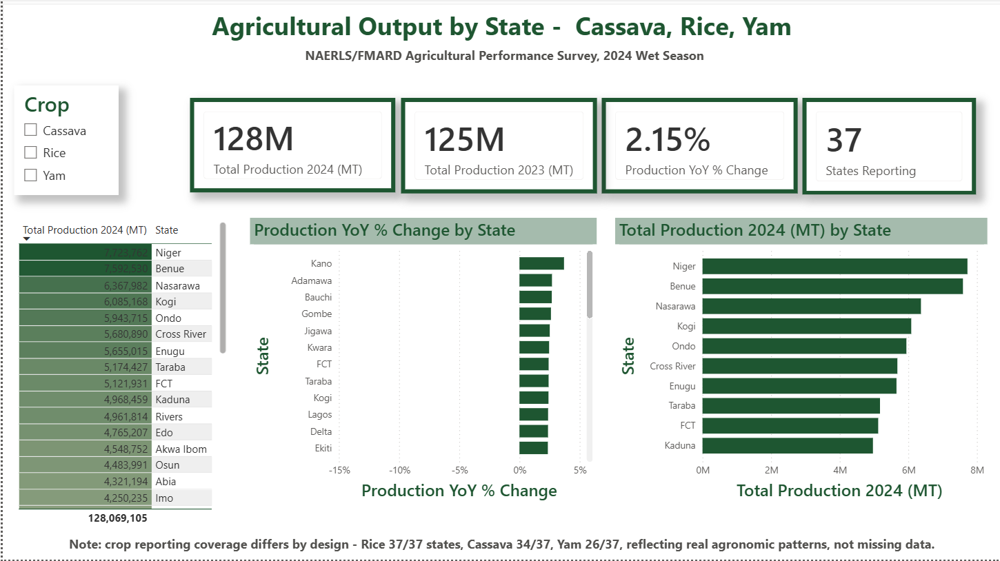

Jude Kangan Dangwam
Data analyst, Jos, Nigeria
I am a Medical Laboratory Science graduate of the University of Jos, trained in data analysis through the 3MTT programme. I like working with real public data: finding it, cleaning it, checking it, and turning it into something people can understand quickly.
My laboratory training taught me to be careful with numbers. I also build health platforms that are live in Nigeria, so I think about the people who will use the data, not only the data itself.
Projects
Agricultural Output by State: Yam, Cassava and Rice
The question
Crop output planning in Nigeria needs better data. Which states produce the most yam, cassava and rice, and how did output change between 2023 and 2024?
What I did
- Compared several datasets and chose the NAERLS/FMARD report because it is official and covers both 2023 and 2024. I rejected a synthetic dataset and unverified files.
- Transcribed Tables 12.1, 12.9 and 12.10 into Excel: 97 state and crop rows (37 rice, 34 cassava, 26 yam). I standardised state names and left unreported states blank instead of filling them with zeros.
- Added year-on-year change formulas (194 formulas, no errors), a long-format Master Data sheet and a National Totals sheet for checking, then set the sheets up as Excel Tables so Power BI could read them cleanly.
- Built the dashboard in Power BI with five DAX measures, a crop filter, KPI cards, ranked bar charts and a shaded table. I checked the rice total against the published national figure of 9,129,908 MT.
What I found
- Niger State leads rice (707,072 MT) and yam (5,149,717 MT). Benue leads cassava (4,204,773 MT).
- Borno's rice output fell 14.6%, the largest fall in the data. Cassava also fell in Zamfara (4.7%), Sokoto (4.0%) and Katsina (1.2%). Every other figure was flat or higher.
- The best yields are not in the biggest producing states: Kano for rice (3.58 MT per hectare), Nasarawa for yam (19.74) and Ondo for cassava (17.35).
- Rice was reported in all 37 locations (36 states plus the FCT), cassava in 34 and yam in 26. That matches how these crops are grown, so I treated it as real coverage, not missing data.

All three crops: total production 128M MT in 2024 against 125M MT in 2023.
Telecom Subscriber Trends by Operator, 2022 to 2023
The question
How did subscriber numbers change across Nigeria's four mobile operators, MTN, Globacom, Airtel and 9mobile, between September 2022 and September 2023?
What I did
- Sourced the NCC quarterly subscriber data and kept the raw table exactly as published.
- Rebuilt it in long format as an Excel Table with quarter-on-quarter change formulas.
- Built a Power BI dashboard with an operator filter, KPI cards, a trend line, a ranked bar chart and a detail table, and wrote a one-page insight summary.
What I found
- The four operators had about 221.3 million subscribers by September 2023. MTN held about 38.8%, Globacom 27.8%, Airtel 27.2% and 9mobile 6.2%.
- MTN fell 7.5% between March and June 2023, then recovered 1.4% the next quarter, but was still below its March level.
- 9mobile is the smallest operator but grew fastest, about 7.2% over the year.
- Globacom grew in every quarter. Airtel was almost flat after December 2022, with one small dip of 0.2% in June 2023.

All operators: 221M subscribers in the latest quarter, up 0.8% on the quarter before. The note at the bottom of the page is fixed and appears on every view.
Other data work
Final year research project
Entered, cleaned and analysed laboratory results for 191 participants from 8 departments, covering susceptibility to 13 antibiotics. University of Jos, 2025 to 2026.
Langtang HealthLink
A disease surveillance dashboard for Langtang North LGA with four user roles, improved over three rounds of feedback from local officials and health workers.
nigeria-lga-data
An open-source dataset covering all 774 Nigerian LGAs, published as an npm package for public health mapping and digital health tools.
MedWise Nigeria
A live health platform in five Nigerian languages. First place at the 3MTT NextGen Knowledge Showcase, Plateau State.
Skills and training
Analysis
Data sourcing and checking, cleaning, long-format modelling, year-on-year comparison, short written insights
Tools
Excel (formulas, Tables), Power BI and DAX, SQL, SPSS, Google Workspace, TypeScript
Training
Data Analysis and Visualization, 3MTT Initiative (NITDA), June 2026
Education
Bachelor of Medical Laboratory Science, University of Jos
Contact
I am looking for a placement where I can work with real datasets. You can reach me at judekangan@gmail.com, on LinkedIn or through my GitHub.